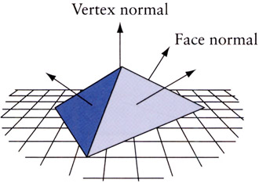
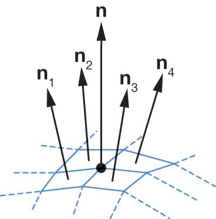
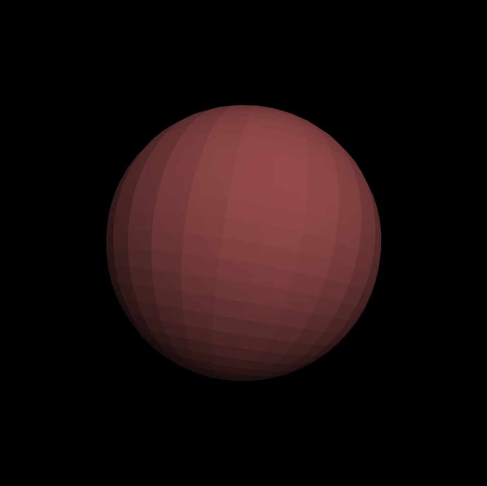
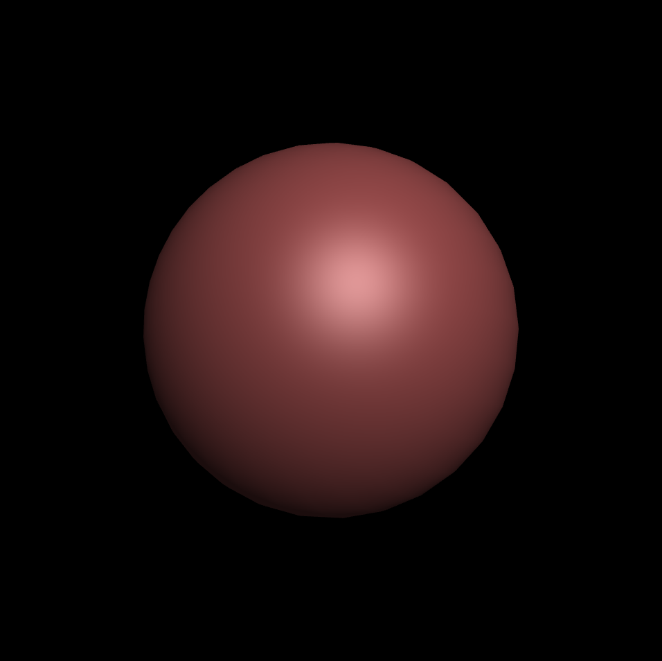
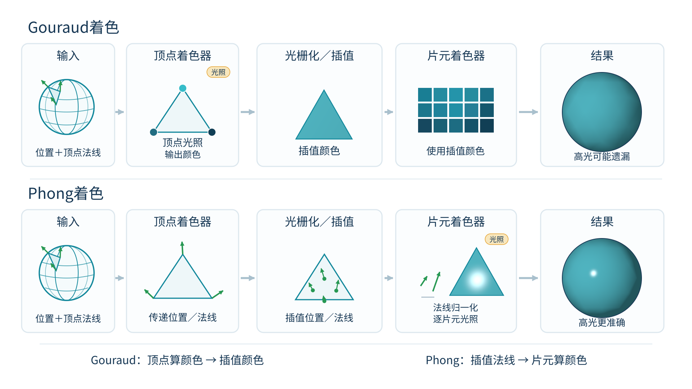
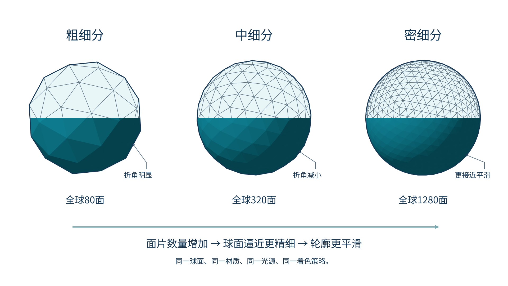
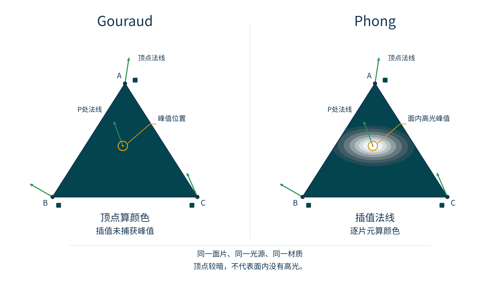

同样的三角形网格，为什么会呈现完全不同的表面效果？


#version 300 es
in vec4 aPosition; // 顶点位置
in vec3 aNormal; // 顶点法向量每个面计算一次光照，面内片元恒定赋同色。
顶点计算光照颜色，面内片元插值颜色。
面内插值法向量，逐片元独立计算光照。


normalize()，否则漫反射与高光会虚假变暗。

normalize(vNormal)。
核心问题：“空间中某一点的颜色依据什么公式计算？”
核心问题：“多边形面内片元何时获得法向并执行光照计算？”
预设观察条件：固定低面数球体与高光指数，轮流选择Flat、Gouraud、Phong。


面常量近似；保留明显棱角。
顶点计算颜色；片元插值。
插值法向量；逐片元求光照。
在带尖锐边缘的器械和平滑骨骼表面中，法向量设计与着色策略未必相同。